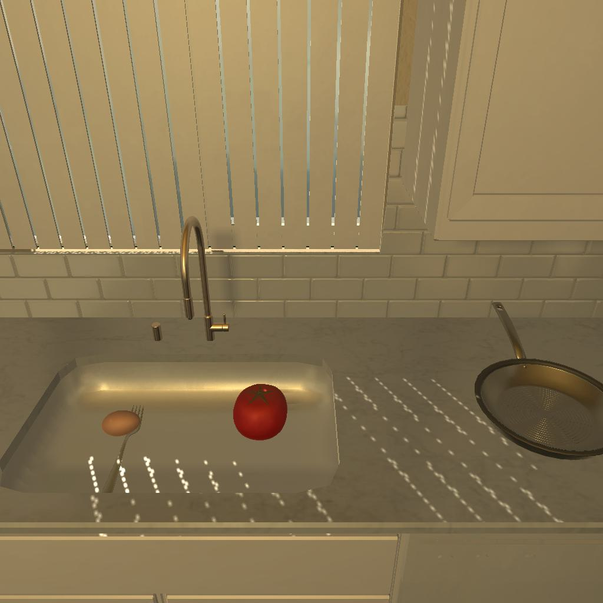

---------------------------------------------------------task: 29---------------------------------------------------------
--------------------------------------------------------------------------------------------------------------------------------------------------------------------
--------------------------------------------------------------------------------------------------------------------------------------------------------------------
Step:--------------------------------------------------------------------------0-------------------------------------------------------------------------------
----------------------------------------
VLM Prompt:
Image1:
**Instruction**
1. Analyze the provided images to identify all visible household objects and compare the difference between images (e.h. whether the object is opened or not and taken on hand or not), focusing on those relevant to the task description "find two tomato and put them in countertop."
2. Use the analysis of images and the task hint "The agent must find an object of the desired type, pick it up, find the correct location to place it, put it down there, then look for another object of the desired type, pick it up, return to previous location, and put it down there with the other object." to answer the question: what is the most reasonable action in the choices for the task description "find two tomato and put them in countertop"?
3. Decide and write the answer using the template: The answer is: (i): , where i is the real number. If there is no desired object in images, search every place based on **Initial Observation** to find the object. And if no one is exactly correct, choose a similar answer.
**Initial Observation**
You are in the middle of a room. Looking quickly around you, you can see cabinet (1-20), toaster (1), microwave (1), garbagecan (1), countertop (1-2), drawer (1-4), stoveburner (1-4), sinkbasin (1), sink (1), fridge (1), diningtable (1), coffeemachine (1)
**Answer Choices**
(1): go to cabinet 1
(2): go to cabinet 2
(3): go to cabinet 3
(4): go to toaster 1
(5): go to cabinet 4
(6): go to cabinet 5
(7): go to microwave 1
(8): go to garbagecan 1
(9): go to countertop 1
(10): go to drawer 1
(11): go to cabinet 6
(12): go to cabinet 7
(13): go to drawer 2
(14): go to stoveburner 1
(15): go to stoveburner 2
(16): go to countertop 2
(17): go to cabinet 8
(18): go to cabinet 9
(19): go to cabinet 10
(20): go to drawer 3
(21): go to drawer 4
(22): go to stoveburner 3
(23): go to stoveburner 4
(24): go to cabinet 11
(25): go to cabinet 12
(26): go to cabinet 13
(27): go to cabinet 14
(28): go to sinkbasin 1
(29): go to sink 1
(30): go to cabinet 15
(31): go to fridge 1
(32): go to cabinet 16
(33): go to cabinet 17
(34): go to cabinet 18
(35): go to cabinet 19
(36): go to diningtable 1
(37): go to coffeemachine 1
(38): go to cabinet 20
**Answer**
Let's think step by step by following the instructions.
----------------------------------------
----------------------------------------
Original Response:
Image 1:
Visible household objects: sink, faucet, egg, tomato, strainer.
Relevant to the task: sink, tomato.
Analysis:
According to the task description "find two tomato and put them in countertop," we need to find two tomatoes and place them on the countertop. In Image 1, we can see one tomato in the sink. Since the task requires two tomatoes, we need to find another one.
Task Hint Analysis:
The agent must find an object of the desired type (tomato), pick it up, find the correct location to place it (countertop), put it down there, then look for another object of the desired type (another tomato), pick it up, return to the previous location (countertop), and put it down there with the other object.
Initial Observation:
The agent is in the middle of a room with various household objects and storage locations such as cabinets, drawers, and a fridge where a tomato might be found.
Most reasonable action:
Since we already have one tomato in the sink, the agent should first pick up the tomato from the sink. Then, the agent should search the nearby storage areas where a tomato might be stored, such as the fridge or cabinets. Since tomatoes are often stored in fridges to keep them fresh, checking the fridge would be a reasonable next step.
The answer is: (31): go to fridge 1
----------------------------------------
----------------------------------------
>>> Refine Original VLM Response and Get Pure Action: go to fridge 1
----------------------------------------
-----------------------------------------------------------------
Running time: 14.445173025131226 seconds
Total Money: 18.173619999999985
-----------------------------------------------------------------
-----------------------------------------------------------------
Text Observation:You arrive at loc 30. The fridge 1 is closed.
-----------------------------------------------------------------
UNSUCCEED